Minecraft modu
Supernatural dizisinin 1–5. sezonunu kendi kurallarıyla çalışan bir Minecraft moduna çevirdik. Bir eşya paketi değil: avcı döngüsü, bir kıyamet, üç ek boyut, 1:1 ölçekli bir Kansas, on iki silah ve sonu olan bir hikâye.
Bu, dizinin hayranları tarafından yapılmış bir hayran modudur. Tanıtım deposu yalnızca ekran görüntülerini ve özellik açıklamalarını içerir; kaynak kod yayımlanmaz.
Shader: kapalı, dengeli.
Modun kendi shader'ı var. Iris ya da OptiFine gerekmez; jar'ın içinde gelir. Çubuğu sürükleyin: aynı kare, iki profil.
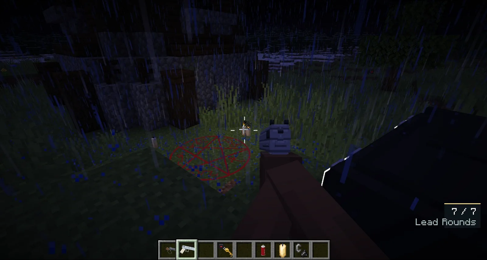
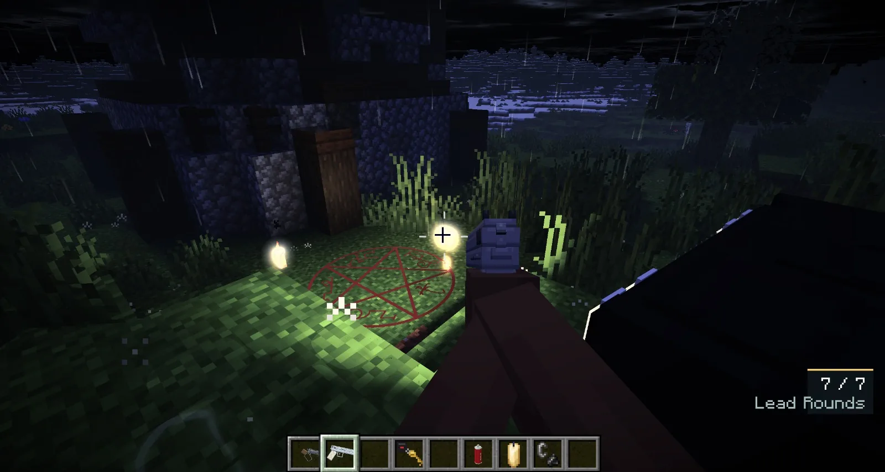

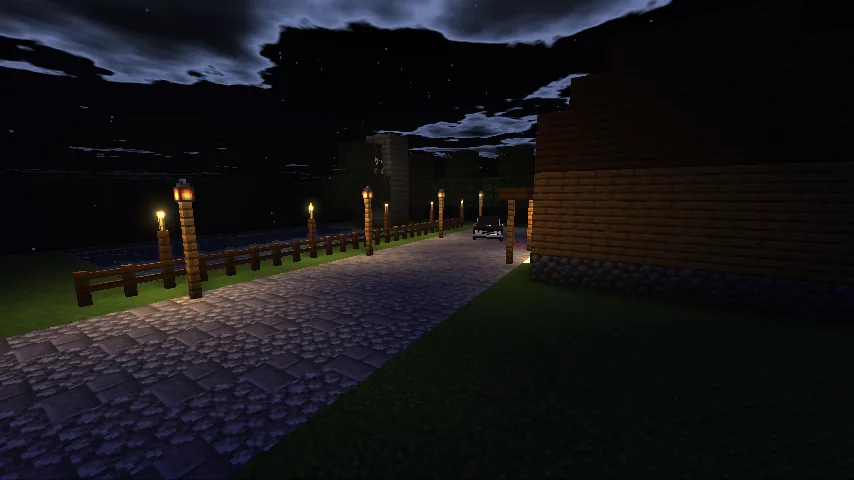
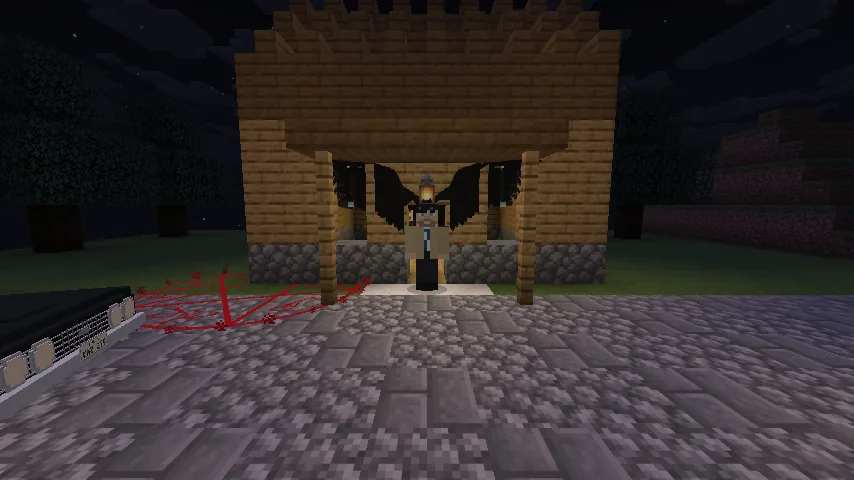


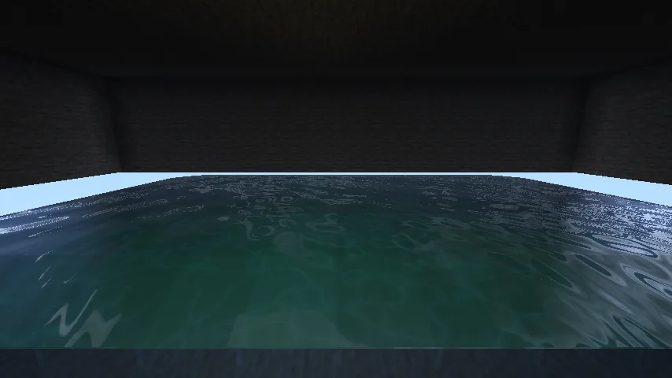


- Kapalı
- Vanilla görüntü, modun kendi efektleri. Shader motoru çalışmaz.
- Hafif
- Doğal renk ve pozlama, ince sis, ışıklar, temas gölgeleri.
- Dengeli
- Güneş ve ay gölgeleri, ıslak yüzeylerde ve sularda yansıma, hacimsel ışık.
- Sinematik
- Dengelinin daha büyük harita ve daha uzun yansıma mesafesiyle hali.
- 12ateşli silah
- 66mühür
- 20+ritüel
- 3ek boyut
- Her biri kendi modeliyle: Colt M1911A1'den M4A1'e.
- Kendi kendine kırılır; her birinde bir işaret gelir.
- Cennet ve Cehennem kapıları, exorcism, kanat kırma, Lucifer çağırma.
- Cennet, Cehennem ve Araf.
Özellikler
Dünya: Lawrence, Kansas (1:1)
Dünya üretilmiyor, gerçek veriden pişiriliyor: yükseklik USGS 3DEP'ten, yollar ve binalar OpenStreetMap'ten. Minimap yolu tanır ve 15.471 düğümlük yol grafında A* ile gerçek bir güzergâh çizer.
Avcı döngüsü
Bobby'den iş alırsın. Olay yerinde kanıt topla, günlüğe yaz, aday listesini daralt, zayıflığı bul. Kanıtlar uzaklara dağıtıldığı için tek tıkla cevap yoktur. Yanlış bıçakla gidersen kaçarsın.
Silahlar ve yakın dövüş
On iki ateşli silah, beş mühimmat türü (Lead, Rock Salt, Silver, Iron, Dead Man's Blood), ateş modları, geri tepme, namlu ısınması ve dört yakın dövüş hamlesi.
Büyüler, ritüeller, mühürler
Tuz kapalı bir çember çizer; çizgi kırılgandır. Şeytan kapanı yere sprey boyayla adım adım çizilir. Enochian mühürleri zırhın üstünde yaşar ve ölümden sağ çıkar.
Kanatlar
F ile açılır; omuzdan çıkar, omurgaya hizalanır ve duvara gerçek bir gölge düşürür. Melek beyaz, başmelek siyah, Lucifer kızıl.
Hikâye
Lucifer sorar; zorlamaz ve yalan söylemez. “Hayır” bedava değildir, “evet” geri alınmaz. Dört Atlı kendi kasabalarında, ve bir sayaç: süre dolarsa Lucifer Dünya'ya iner.
Galeri
Gerçek ekran görüntüsü
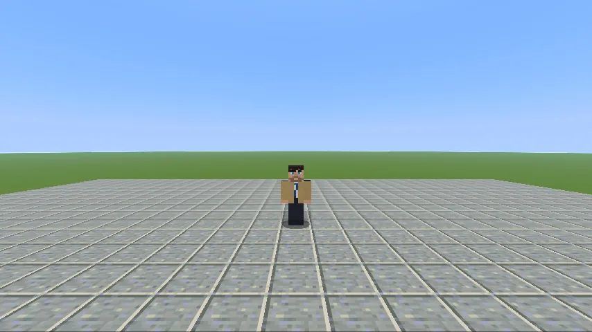
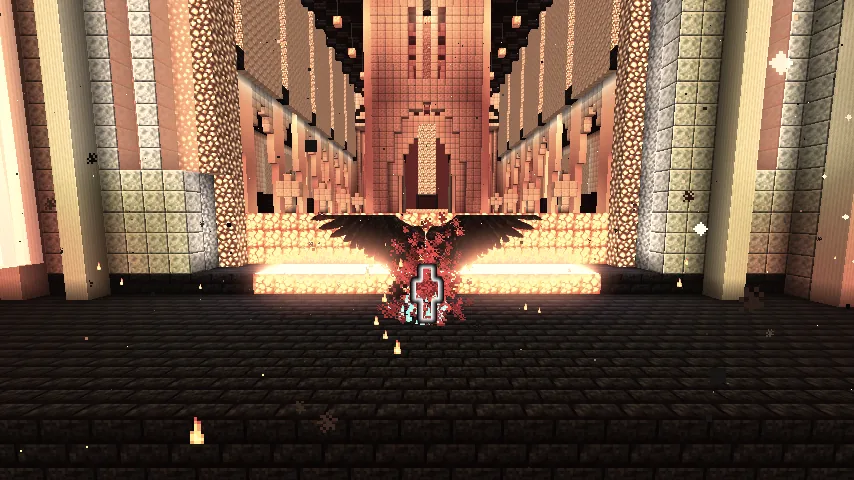
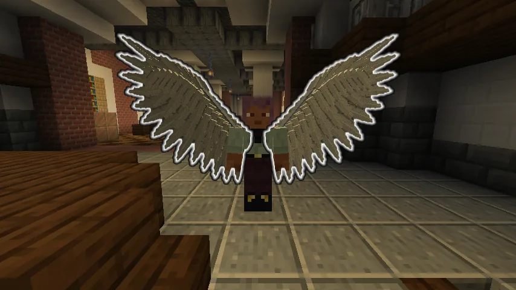

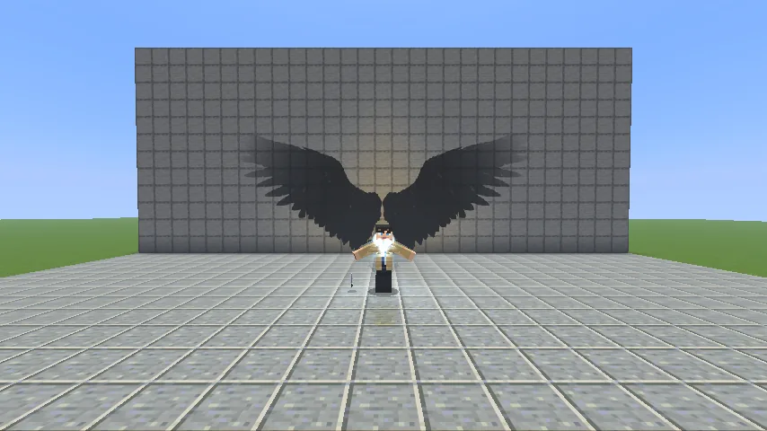
Gerçek ekran görüntüsü
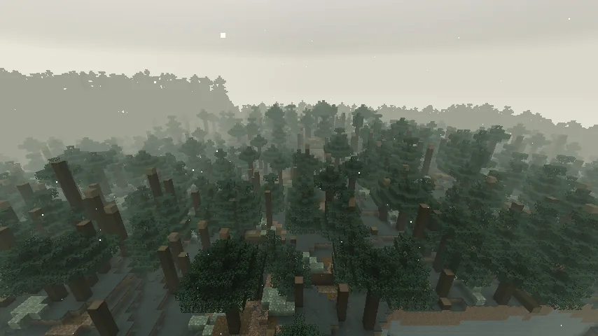
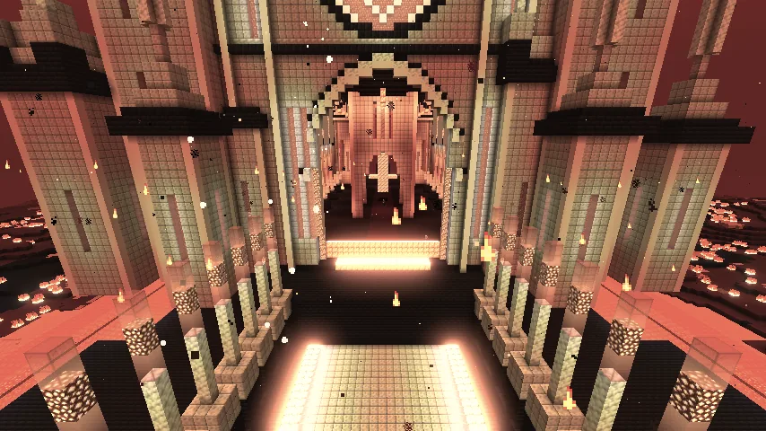


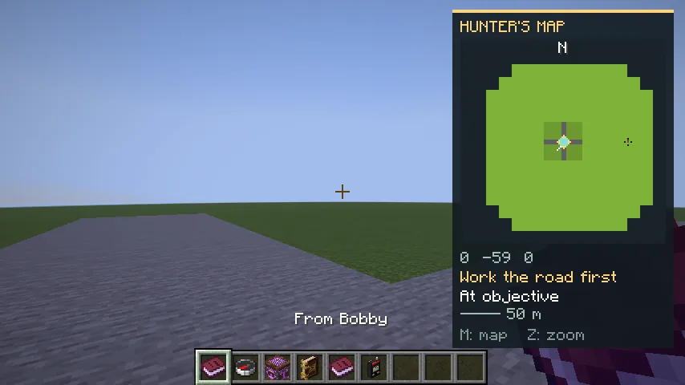
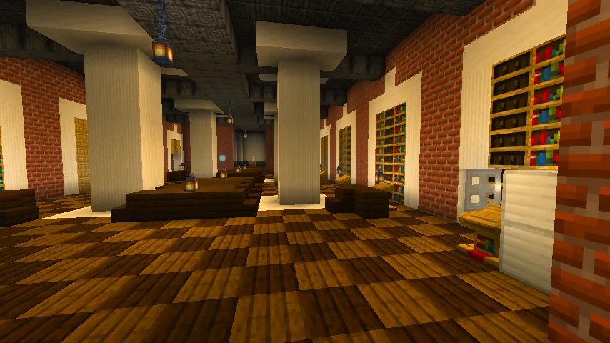
Gerçek ekran görüntüsü
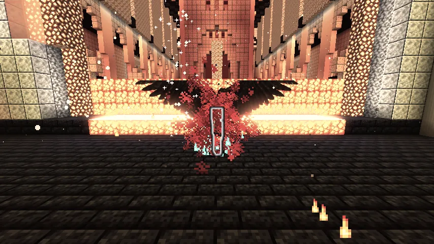


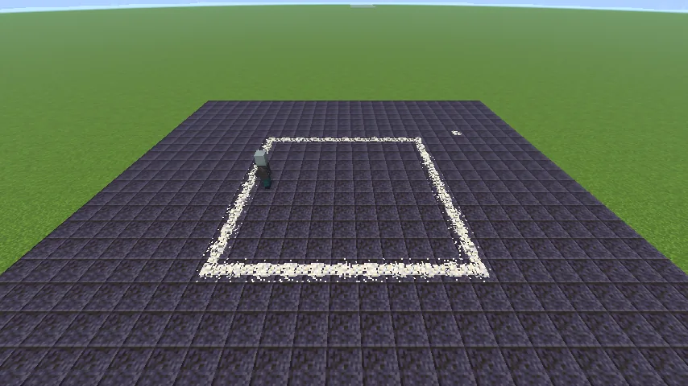
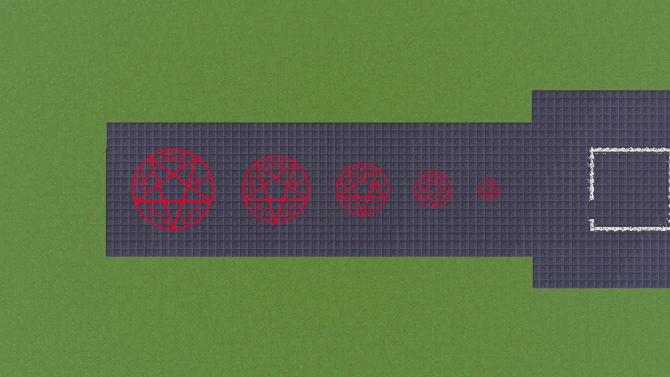

Gerçek ekran görüntüsü


Gerçek bir Kansas.
Kansas-caeleste, modun dünya haritası: Lawrence ve batısı, 1 blok = 1 metre, 8th ve Massachusetts Sokağı 0,0 noktasında. Harita, mod dünya kurma ekranında indirsin diye sürüm dosyası olarak yayımlanır.
- 22.774 bina
- 423 kasaba
- 1.497 km sürülebilir yol
- 15.471 düğümlük yol grafı
- downtown
- 8th ve Massachusetts ile çevresi · ~12 MB
- lawrence
- Şehir ve banliyöleri · ~60 MB
- tam
- Tam karo, Stull'un ötesine kadar (24,6 × 9,2 km) · ~175 MB
- Tür
- Minecraft modu
- Durum
- Erken Erişim 0.1
- Teknoloji
- Minecraft 26.2 · Fabric · Java 25
- Bağlantılar
- Projenin kendi sitesiTanıtım deposu